Software Developer, AI & Machine Learning Engineer.
BSc Hons Computer Science (AI), University of Johannesburg, Open to graduate roles in South Africa
Download CV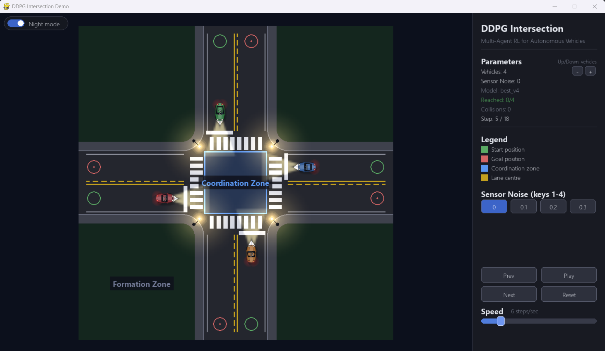
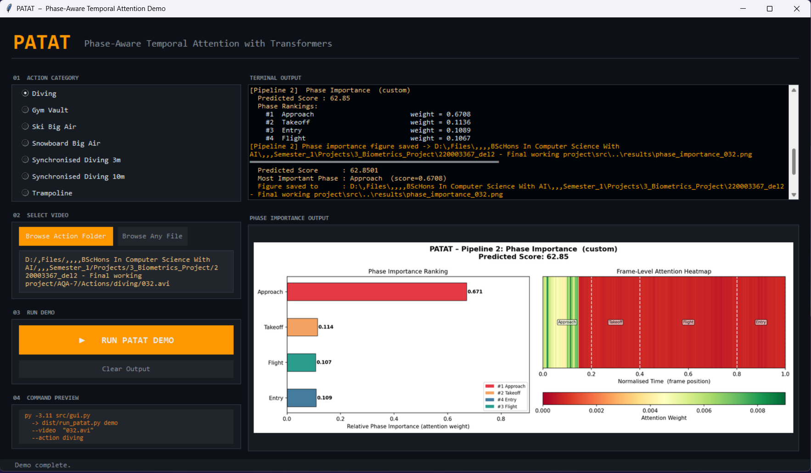
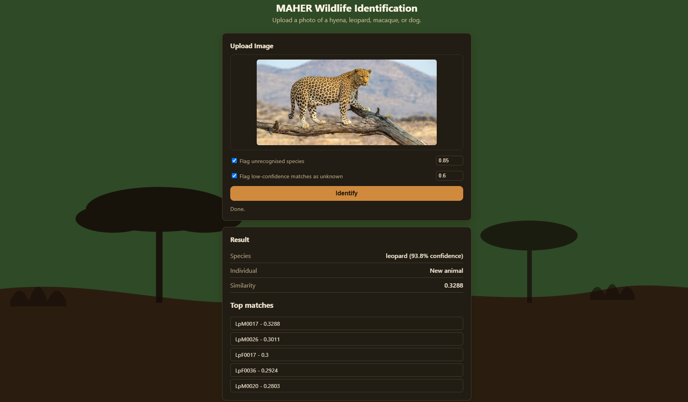
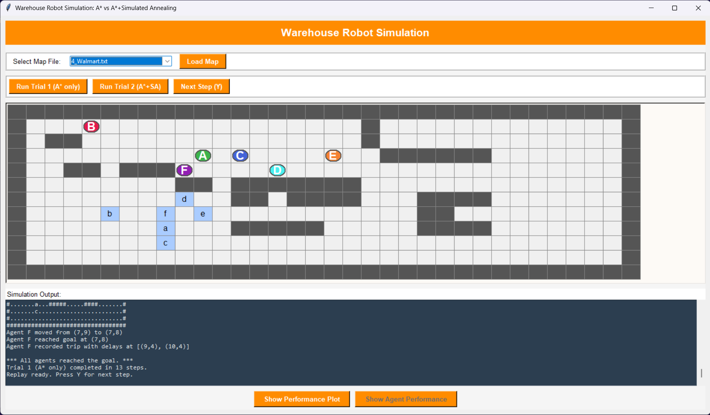
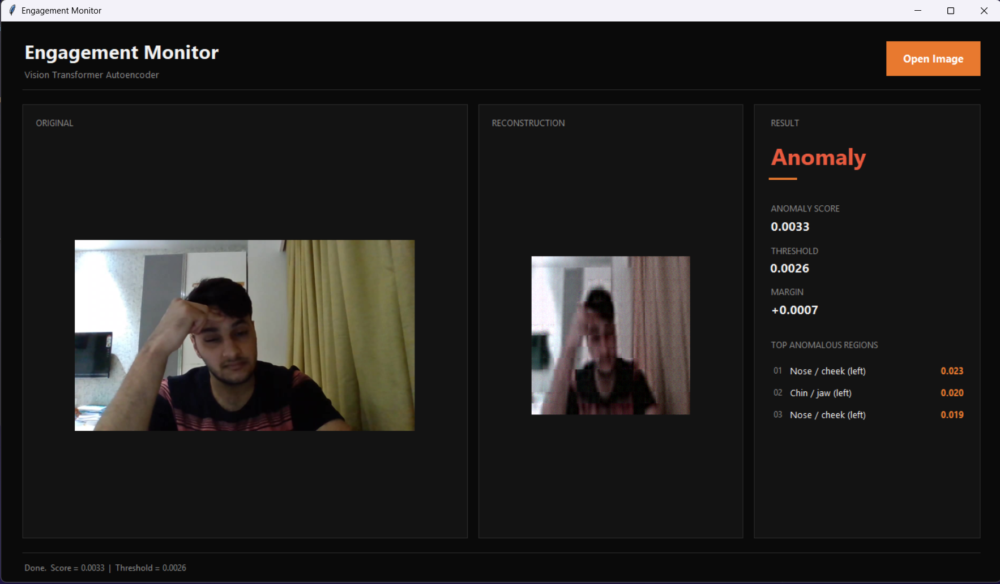
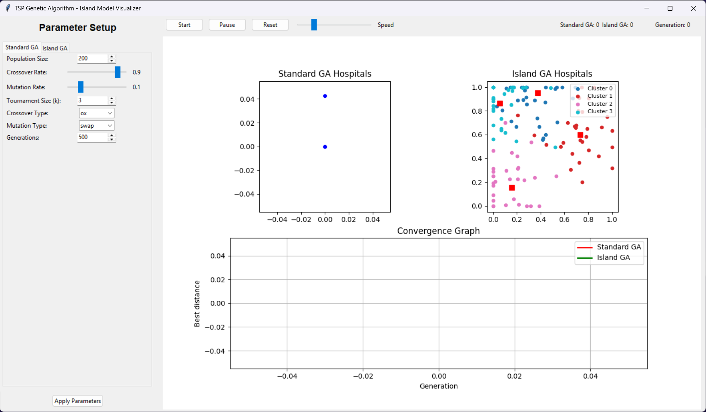
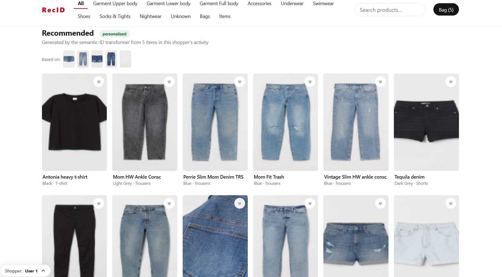
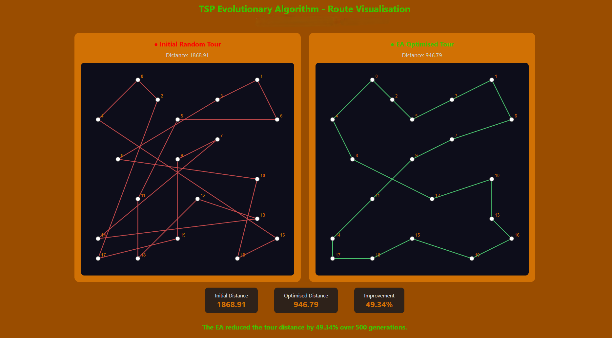
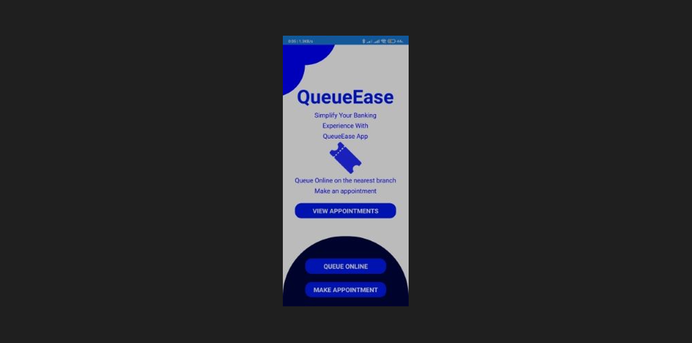
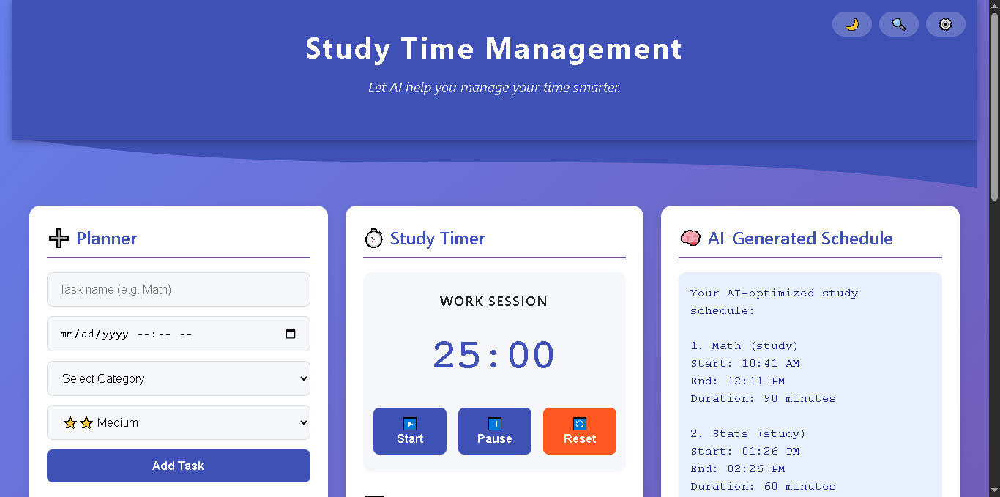
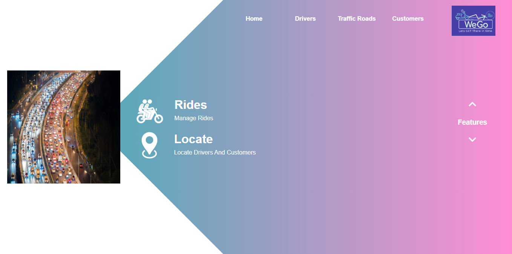
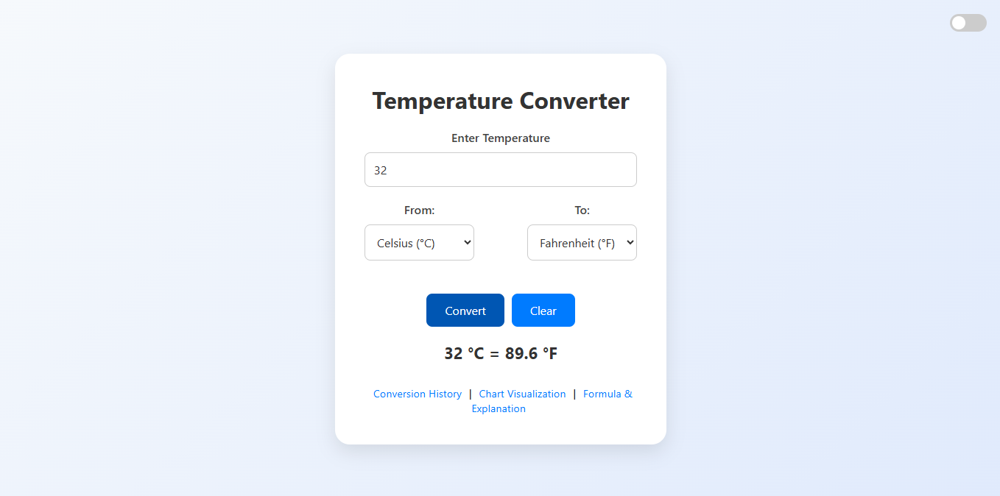
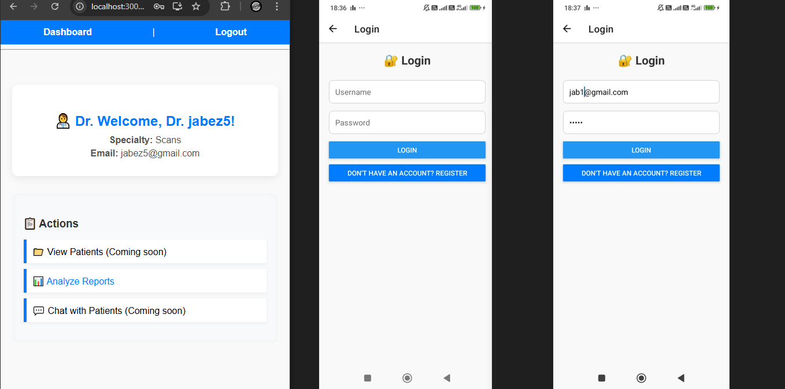
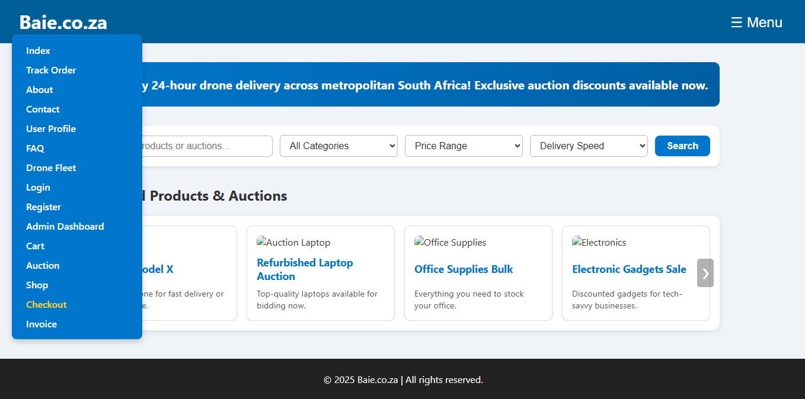
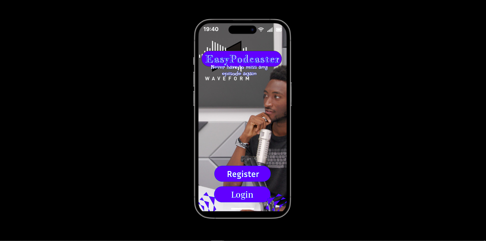
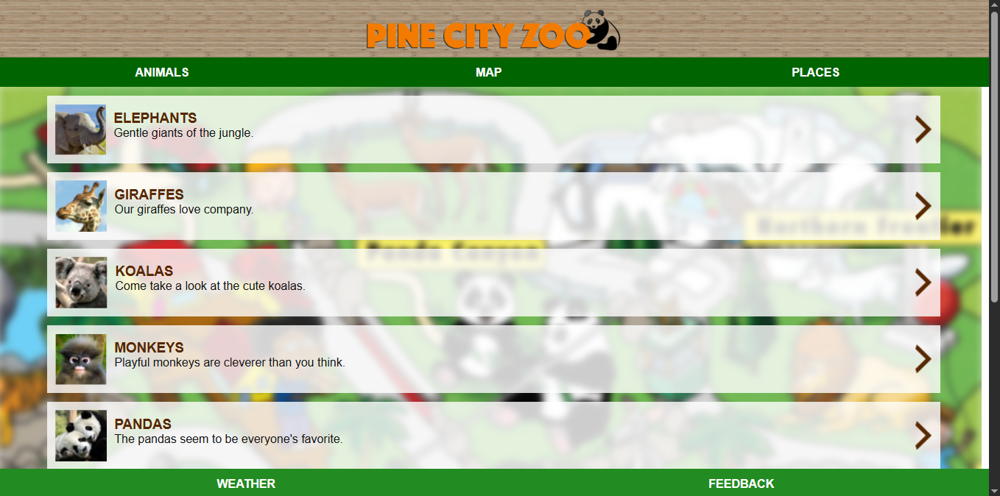
Hi, My name is Jabez Phala and I am a software Developer. I just graduated from University of Johannesburg in Computer Science and Software Engineering academy.
I love to develop software solutions, expecially in the focus of mobile application, web technologies, Artificial Intelligence, Data Science, Deep Learning, Computer Vision and more.
I have build some nice projects from detecting if a student is engaged in class based on an image to giving a score from a diving video with intepretation of where to improve.
I would love to apply my knowledge to the rest of the world. Team work is quite fun, I have worked in groups 3 times and I loved it, because there is always something new I learn from the team.
I am Currently learning: Recommender Systems
Barchelor Degree: BSc In Computer Science and Information Technology.
Honours Barchelor Degree: BSc Hons In Computer Science with AI.
From vision to reality, I aim to make a difference.
Get in touch using any of the links below.